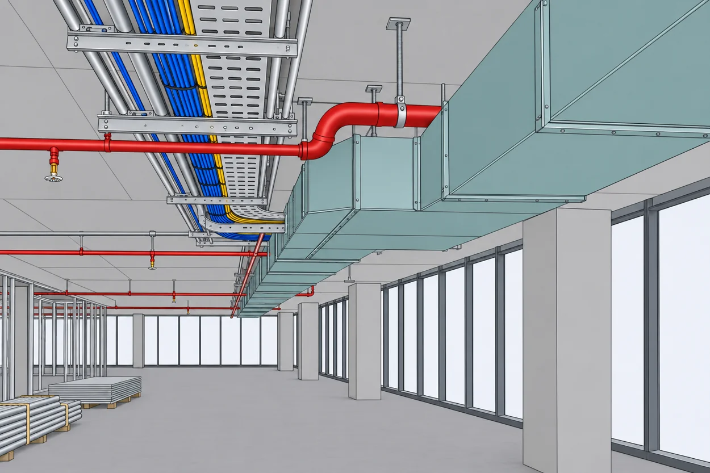

Aura Pro
Get stuff done.
Aura Pro is a platform for turning a real-world objective into a plan and guiding the work through to completion. For a small DIY task like fixing a clogged sink, it offers step-by-step guidance.
For a billion-dollar development, Aura Pro builds a dynamic plan from where the project stands today to the finished building. It draws on knowledge from past projects and runs simulations guided by the project team to compare different ways to get there.
The master plan breaks down into smaller plans, each with its own objective. Those plans break down further until a crew has a specific task it can carry out. As crews learn what works on site, their findings feed back into the simulations so the team can refine the plan for the whole development.


All handbook chapters
How Aura Pro works
- Introduction
The same platform for a DIY repair and a major development.
- The 11-step process
The cognitive map from objective and discovery through execution and learning.
- Follow one tower decision
From a field measurement to an approved change and an opening date.
Construction and technology
- Whole-building simulation proposal with NVIDIA
Model construction from current site conditions through occupancy, using prior projects to compare labor, logistics, and weather across build sequences.
- What can change the outcome
See how permits, suppliers, weather, and shared resources can change the building’s schedule.
- How labor and physical logistics interact
The concrete crew and trucks are on site. The pour has to wait because the shift’s only qualified pump operator is absent.
- One tower, two opening dates
Follow the crane booking and field clearance check through to October 1 or October 22.
- How previous projects shape the next one
Use records from comparable jobs to estimate production rates and identify what to check on this site.
- Where NVIDIA fits
Which tools can check a lift route, sequence deliveries, or test weather-sensitive work?
- What can change the outcome
- Tech stack
Where Procore, Raken, Sage, and Aura Pro fit today and as functions move.
- Construction tools and integration
How project records and decisions move between systems.
- North Lex to Galleria estimate
Use quantities and crew hours from one job to estimate another.
Examples
- Compare the seven examples
See where the reasoning patterns overlap and where they differ.
- Clogged sink
Check whether a repair worked.
- ’67 Chevy
Revise the goal when a discovery changes what matters.
- Attached garage
Trace what moving a door changes elsewhere.
- Duplex portfolio
Use repair histories to spot a recurring failure.
- Iron Man suit
Choose a prototype that tests an idea.
- Car wash
Keep daily work moving while handling exceptions.
- Billion-dollar skyscraper
Find the one field check that can change opening day.
System capabilities
- Overview of the ten capabilities
How the platform supports decisions, fieldwork, and follow-up.
- Intent and authority
Who sets the objective, commits money, and releases the crew?
- Field observation and evidence
What should the team do when measurements and drawings disagree?
- Project and asset model
What exists on site, where is it, and what depends on it?
- Reasoning and inquiry
Which question is worth investigating next?
- General planning and simulation
How Aura Pro compares ways to carry out any job and tests the assumption that could change the choice.
- Resources and logistics
When will people, materials, equipment, and access coincide?
- Work coordination and execution
How does an approved decision reach the person doing the work?
- Verification and acceptance
Who checks the result and what does that check settle?
- Project memory and learning
What can the next job learn from this one?
- Human and agent interfaces
What does each participant need to see and do?